class: center, middle # 书店管理系统 ### 项目总结报告 *** #### 孙鹏晖 --- # 主要内容 *** ### 1. 项目概述 ### 2. 系统展示 ### 3. 项目分析 ### 4. 解决方案 ### 5. 项目总结 --- ## 项目概述 *** 本项目为书店管理系统, 主要参与者为店主, 顾客和供货商, 书店管理系统需要满足如下需求: ### 店长 1. 书籍管理: 店长可以管理书籍相关的信息. 2. 订单管理:店长可以管理书籍订单. 3. 用户管理:店长可以管理顾客与供货商的账户. 4. 销售管理:店长可以在线销售书籍. ### 供货商 1. 订单管理: 供货商可以对店长发布的订单进行处理. --- ## 项目概述 *** ### 顾客 1. 书籍查询:顾客可以查询自己需要的书籍. 2. 书籍购买:顾客可以购买所需要的书籍, 并自动创建订单. 3. 订单管理:顾客可以查看订单的状态, 可以自主取消订单. 4. 退货: 当顾客对到手的书籍不满意时, 可以申请退货. 5. 书籍评价: 顾客收到书籍后, 可以对书籍做出评价, 反馈自己的意见或建议. #### 需求变更 1. 希望添加顾客的预订功能, 对于系统中当前没有, 而顾客有需要的书, 顾客可以申请预订. 店长根据实际情况, 接受或者拒绝顾客的申请. --- ## 系统展示 #### .right[首页] 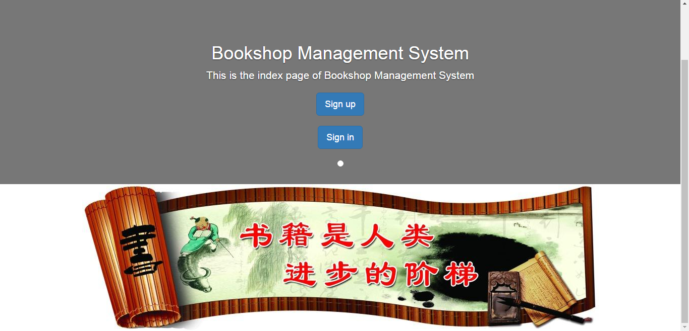 --- ## 系统展示 #### .right[用户注册] 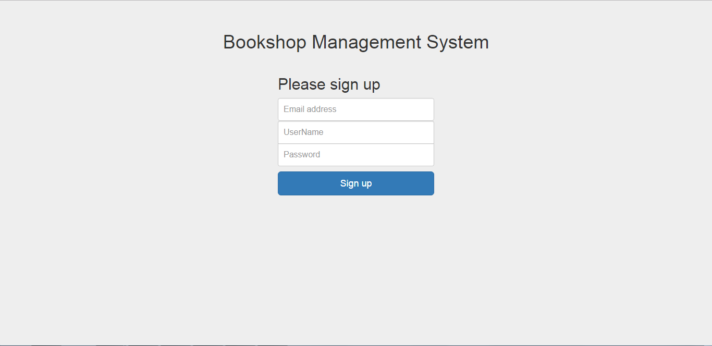 --- ## 系统展示 #### .right[用户登录] 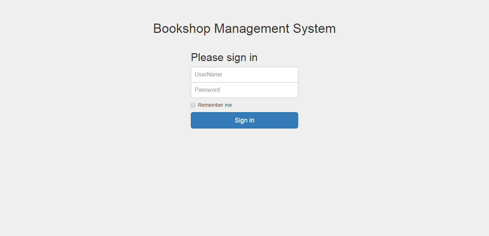 --- ## 系统展示 (店主) #### .right[书籍管理: 书籍信息] 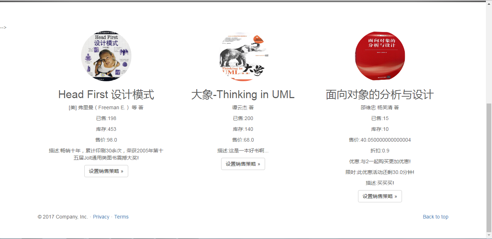 --- ## 系统展示 (店主) #### .right[书籍管理: 添加书籍] 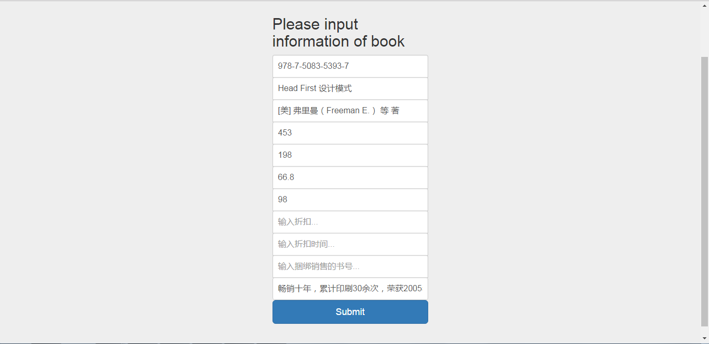 --- ## 系统展示 (店主) #### .right[书籍管理: 删除书籍] 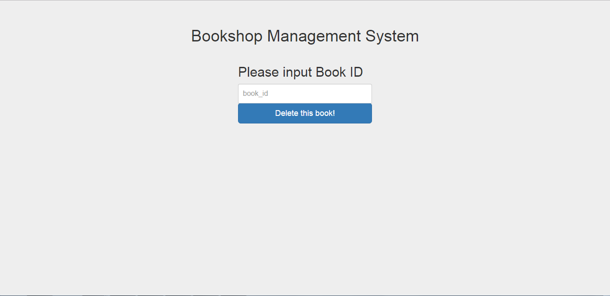 --- ## 系统展示 (店主) #### .right[书籍管理: 修改书籍信息] 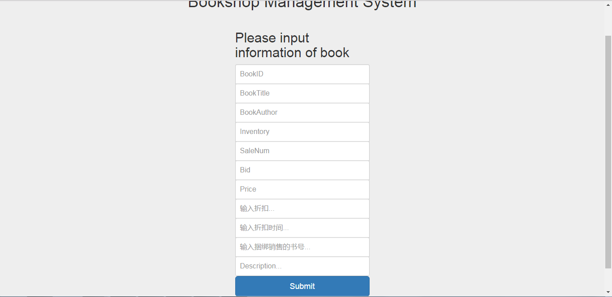 --- ## 系统展示 (店主) #### .right[书籍管理: 查询书籍] 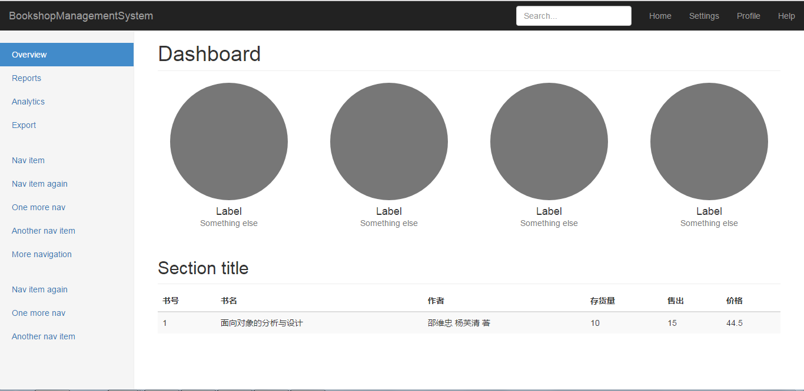 --- ## 系统展示 (店主) #### .right[订单管理: 添加订单] 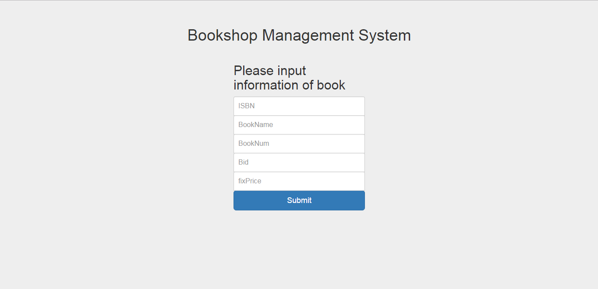 --- ## 系统展示 (店主) #### .right[订单管理: 撤销订单] 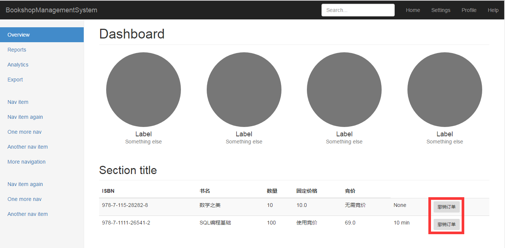 --- ## 系统展示 (店主) #### .right[用户管理: 查看/审核/添加/封禁账户] 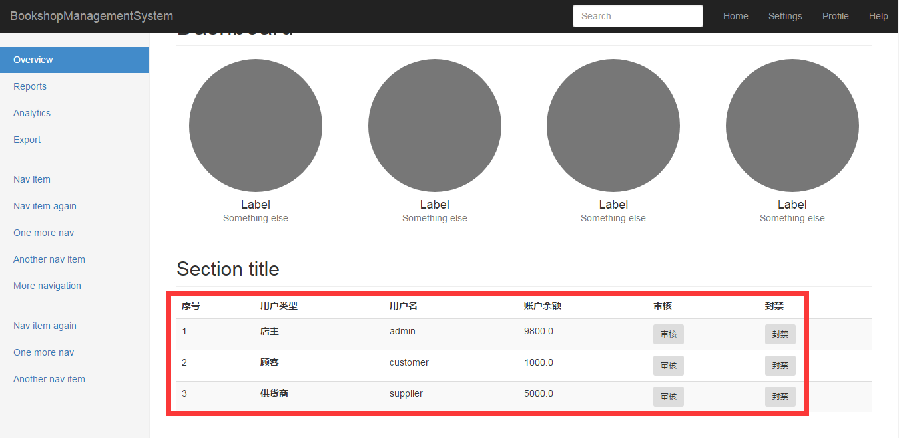 --- ## 系统展示 (店主) #### .right[销售管理: 销售书籍/销售策略] 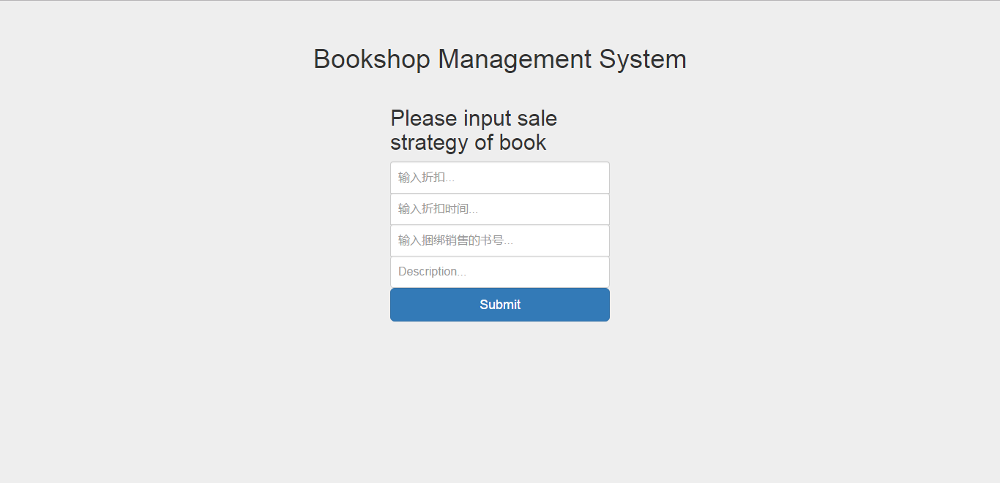 --- ## 系统展示 (顾客) #### .right[书籍查询] 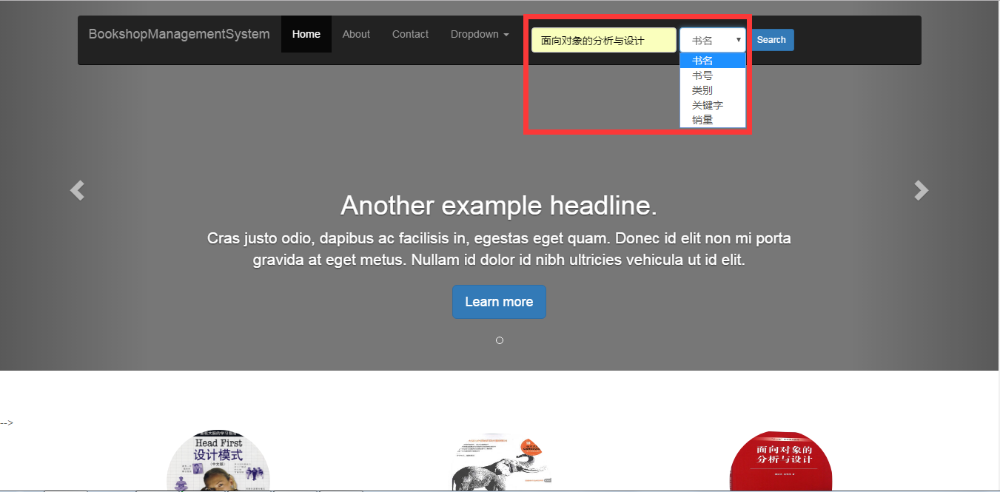 --- ## 系统展示 (顾客) #### .right[书籍收藏] 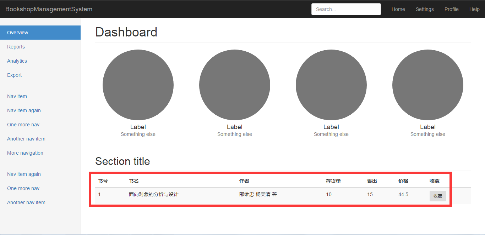 --- ## 系统展示 (顾客) #### .right[浏览历史] 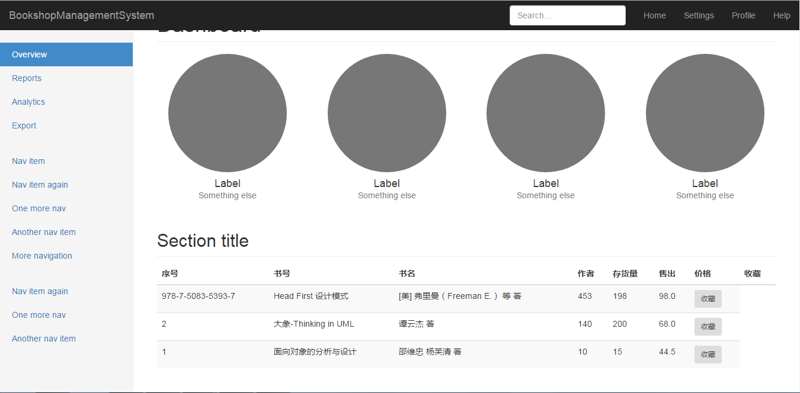 --- ## 系统展示 (顾客) #### .right[书籍购买: 创建订单] 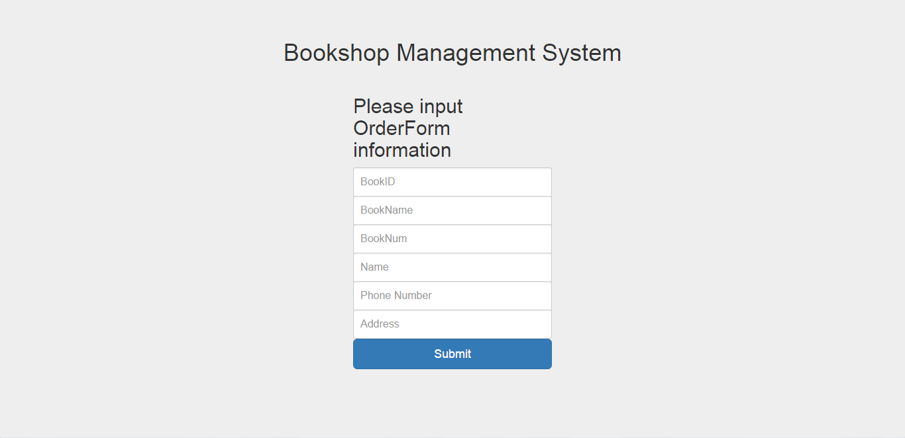 --- ## 系统展示 (顾客) #### .right[订单管理:查询/取消订单/退货申请] 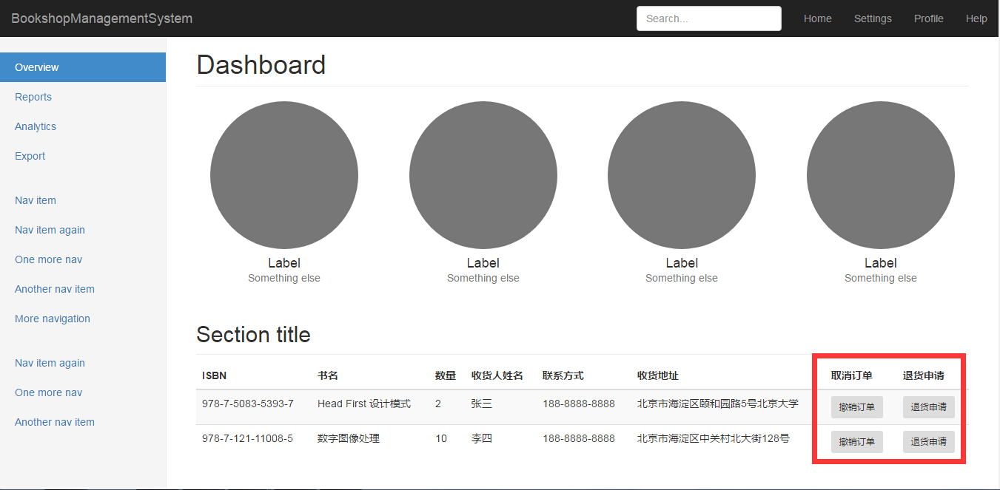 --- ## 系统展示 (顾客) #### .right[书籍评价] 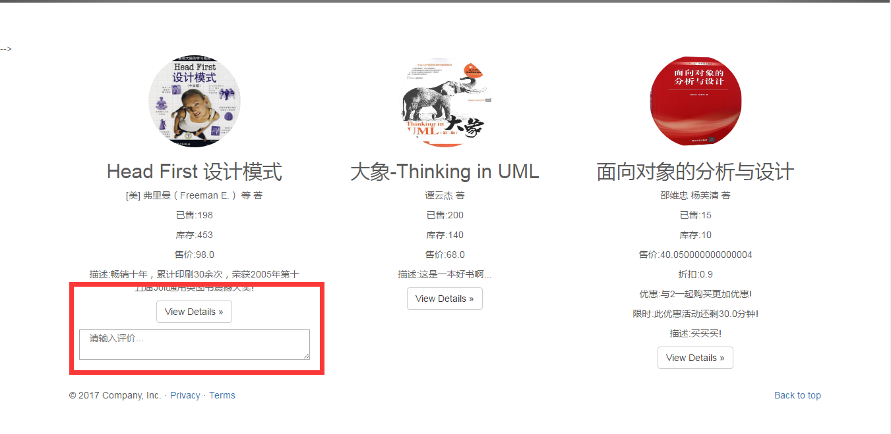 --- ## 系统展示 (供货商) #### .right[订单管理] 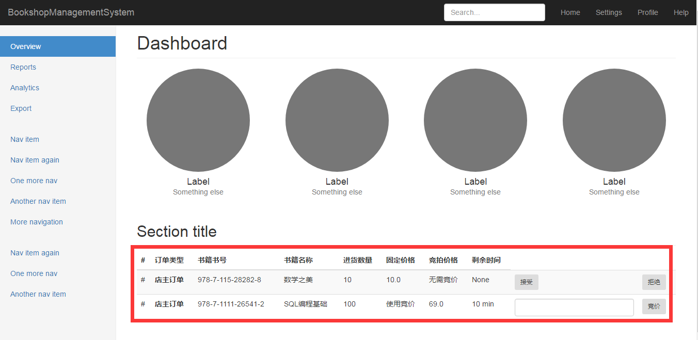 --- ## 系统展示 (需求变更) #### .right[顾客书籍预定] 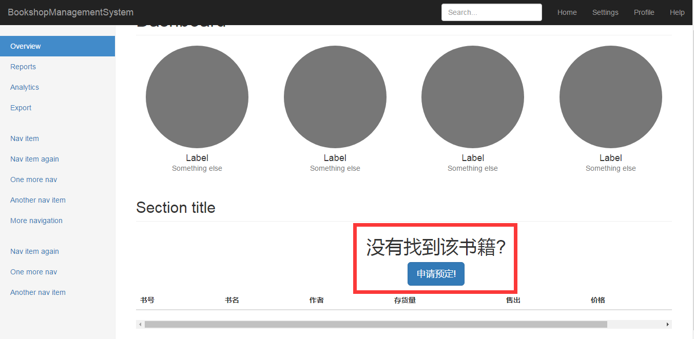 --- ## 系统展示 (需求变更) #### .right[店主书籍预定处理:接受/拒绝] 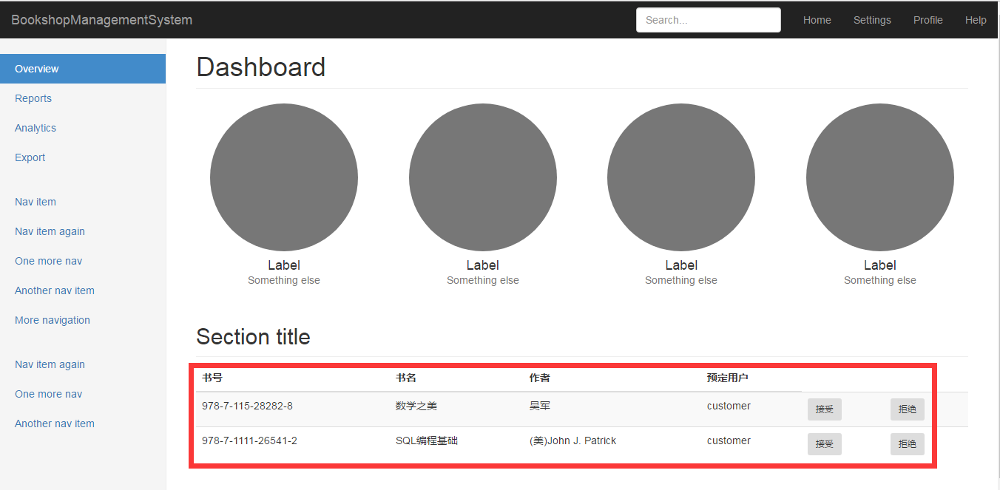 --- ## 项目分析 本项目共分为两轮: 原始需求+需求变更. 针对原始需求, 整体架构与设计文档基本一致, 未出现大面积重构现象, 在具体实现时, 根据具体需要调整了个别类及数据表的属性, 也比较符合设计的原则, 因此面向对象的分析与设计对系统的实现有着良好的指导作用. 针对需求变更部分, 原始的设计很好地应对了需求变更, 符合开闭原则, 只需在原有系统基础上进行扩展即可而不需要重新修改已有的代码. --- ## 解决方案 由于甲方任务相对常见, 并且系统本身属于作业级别的模拟系统, 因此常见的技术难题都有可参考的解决方案, 因此在实现时面对的技术难题和挑战通常采用一下几种解决方案: 1. 通过网络/书籍/互助等方式直接寻找问题的解决方案; 2. 以曲线救国的方式用其他可以代替的解决方案对当前问题进行替换; 3. 与甲方沟通, 请求甲方去掉该需求; --- ## 项目总结 本学期推荐的参考用书对项目的分析和设计起到了巨大作用, << 面向对象的分析与设计 >>论述面向对象方法的基本思想和主要概念, 严谨的学院派风格给人建立起一个清晰的认识, << 大象-Thinking in UML >>则更加贴近工程化领域, 在本项目前期的分析和设计中都有所体现, 例如需求分析中发现主角, 系统分析中确定系统用况等. 在设计模式方面, << Head First 设计模式 >>介绍了常用的设计模式, 对系统的设计和实现起到了良好的借鉴, 例如对系统中的全局类采用单例模式. 本项目的分析与设计是伴随着课程的进行而同步进行的, 从基本概念的了解, 到结构的分析和设计, 再到系统的实现与扩展, 课程的安排和设计让人收获颇丰. --- class: center, middle # 谢谢!